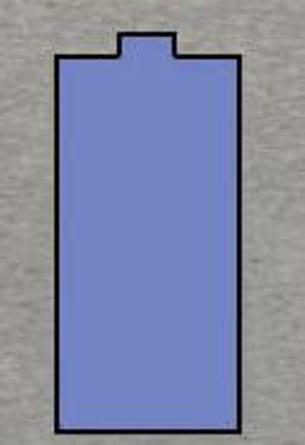
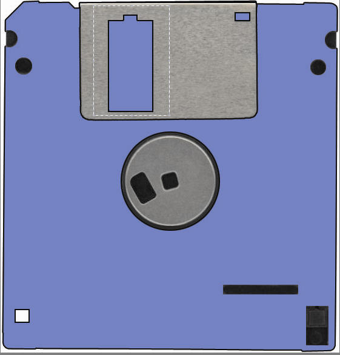
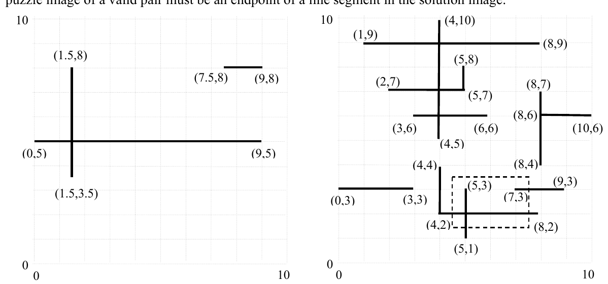

ICPC World Finals 2005 · Problem A
“Eyeball benders” are a popular kind of puzzle in which the reader must identify a common object based on a close-up view of a part of that object. For instance, an image that looks like a regular array of colored cones might be a view of an open box of new crayons. Figure 1 shows an example where the puzzle is on the left and the solution is on the right.


You must verify solutions to a simplified version of the “eyeball bender” puzzle. You will be given a number of pairs of images, each one a collection of line segments. All line segments will be either horizontal or vertical, and they include their endpoints. Figure 2 shows an example.
You must determine whether the images form a valid pair in which the first image is a magnified view of some portion of the second image. Lines are assumed to have zero thickness in both images. At least one endpoint in the puzzle image of a valid pair must be an endpoint of a line segment in the solution image.

Coordinates describe relative positions and scale within a single image. The coordinates in one image do not necessarily use the same origin or scale as those in the other image. The magnification of the puzzle image relative to the solution image is required to be greater than or equal to 1. For Figure 2, your program should determine that this is a valid puzzle/solution image pair.
The input consists of multiple cases. The input for each case begins with two positive integers M and N, (1 ≤ M,N ≤ 50). M is the number of line segments in the puzzle image. N is the number of line segments in the proposed solution image. The following lines contain M + N pairs of points. The first M pairs of points are the endpoints of the line segments in the puzzle image; the remaining N pairs of points are the endpoints of the proposed solution image. The x and y coordinates for each pair satisfy –100 ≤ x, y ≤ 100 and are given to at most three decimal places of precision. All input values are separated by white space (blanks or new line characters).
No pair of distinct points in a given image will be closer than .005 to another (relative to the scale of the image) and all segments will have length at least .005. No two horizontal segments overlap and no two vertical segments overlap. However, horizontal segments may intersect vertical segments either internally or at segment endpoints.
The input data for the last case is followed by a line consisting of the integers 0 0.
For each input case, display the case number (1, 2, …) followed by the words “valid puzzle” if the proposed solution image matches a closed rectangular sub-region of the puzzle image (including at least one endpoint), magnified by a factor of one or greater, and possibly translated by some amount. Line segments that are not included in the puzzle image will be at least 0.005 distant from the rectangle.
If the match condition fails to hold, print “impossible”. Follow the format of the sample output.
3 12 9 8 7.5 8 1.5 8 1.5 3.5 0 5 9 5 4 2 8 2 5 7 2 7 10 6 8 6 8 7 8 4 1 9 8 9 9 3 7 3 4 10 4 5 4 2 4 4 5 8 5 7 3 6 6 6 0 3 3 3 5 1 5 3 4 12 -50 -5 50 -5 0 10 0 -10 50 5 -50 5 -50 0 50 0 4 2 8 2 5 7 2 7 10 6 8 6 8 7 8 4 1 9 8 9 9 3 7 3 4 10 4 5 4 2 4 4 5 8 5 7 3 6 6 6 0 3 3 3 5 1 5 3 0 0
Case 1: valid puzzle Case 2: impossible